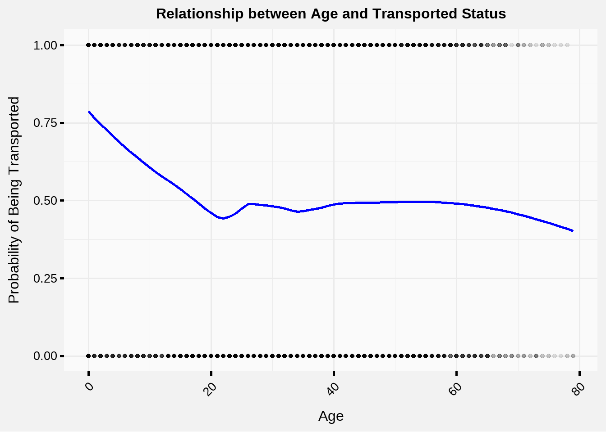

Spaceship Titanic - Introduction to Bayesian Models - Part 3
Part 3: Further Refinement
Welcome to Part 3 of my Introduction to Bayesian Models series.
If you haven’t read Part 1 or Part 2 yet, I really suggest reading those first so that you don’t think I’m rambling about aliens for no reason.
In Part 3 we will try to improve the accuracy of our model by exploring generalized additive models (GAMs), and also examine the ROC curves of the model.
Age is Non-Linear
The first thing I want to address in our model is the Age variable.
Including Age as a linear predictor probably captured some of the effects that it has, but in our univariate analysis we showed that the relationship Age has with Transported Status is not necessarily linear.

In fact, it’s hard to even visualize a continuous variable against a TRUE/FALSE response variable, and you might even be wondering what that blue line means, since it’s not the Age variable and it’s not the Transported variable.
When I originally plotted this line in Part 1, I used a technique called loess which is a method for smoothing a relationship between two variables, for example Transportation ~ Age.
My idea for a more effective use of Age in the model is this:
What if instead of using the Age variable directly, we applied some mapping from Age to a quantity close to the blue line in the graph, and then used that newly fitted value as our predictive variable instead of Age?
This should capture the relationship between Age and Transported more effectively than a linear relationship, with the drawback that the model coefficients aren’t as easily interpretable, and we run the risk of over-fitting. Ideally we should produce a somewhat generalized fit without jagged points to reduce the over-fitting risk.
Similar idea to the blue line: We can use a generalized additive model (GAM) to fit the univariate model
Transportation ~ Age, and then replace the Age column with the fit from this model.
Fitting the GAM model.
Let’s fit a GAM model between Transportation and Age using the mcgv package.
library(mgcv)
age_model <- gam(Transported ~ s(Age), data = imputed_sst_data, family = binomial(link = "logit"))
age_grid <- with(imputed_sst_data, data.frame(Age = seq(min(Age, na.rm = TRUE), max(Age, na.rm = TRUE), length.out = 100)))
age_grid$Predicted <- predict(age_model, newdata = age_grid, type = "response")
ggplot(age_grid, aes(x = Age, y = Predicted)) +
geom_line(color = "#2C3E50") +
geom_ribbon(aes(ymin = Predicted - 2*sqrt(Predicted * (1 - Predicted) / nrow(age_grid)),
ymax = Predicted + 2*sqrt(Predicted * (1 - Predicted) / nrow(age_grid))),
fill = "blue", alpha = 0.2) +
rj_custom_theme()
That definitely looks line an interesting and non-linear relationship. I will append the predictions back to my original data set and call the new column Age_Pred.
Code
imputed_sst_data$Age_Pred <- predict(age_model, imputed_sst_data, type = "response")Breaking Down the Cabin Field
The other variable I wanted to add to our next model iteration was Cabin.
The cabin number where the passenger is staying. It takes the form deck/num/side, where side can be either P for Port or S for Starboard.
Code
imputed_sst_data %>%
select(Cabin) %>%
head %>%
rj_custom_table()Cabin |
|---|
B/0/P |
F/0/S |
A/0/S |
A/0/S |
F/1/S |
F/0/P |
Implementing the information from the Cabin variable takes a little more complex data manipulation:
Split
Cabininto three variables calleddeck,num, andside.Impute
deck,num, orsidevalues.Use the same GAM strategy on
numalso, which is to fit a GAM modelTransportation ~ numso that we can capture the non-linear effect.We can also create an indicator variable from the
Cabinfield. If multiple people are staying in the same Cabin then we can set a new variable calledCabinMultto TRUE, and FALSE otherwise.- I’ll do this before imputing any of the missing variables to avoid creating it using imputed data.
Later, when I do the full model fit and submission to Kaggle, I’ll probably impute all missing variables at once (and also on the test set as well) instead of imputing one at a time.
cabin_sst_data <- imputed_sst_data %>%
tidyr::separate(Cabin, into = c("deck", "num", "side"), sep = "/", remove = FALSE, fill = "right") %>%
mutate(deck = ifelse(deck == "", NA, deck)) %>%
group_by(deck, num, side) %>%
mutate(people_in_room = n(),
CabinMult = ifelse(people_in_room > 1 & !is.na(deck), TRUE, FALSE)) %>%
select(-c(Cabin, people_in_room)) %>%
ungroup() %>%
mutate(deck = factor(deck),
num = as.numeric(num),
side = factor(side))
cabin_no_transport <- cabin_sst_data %>% select(-"Transported")
cabin_transport <- cabin_sst_data %>% pull("Transported")
imputed_cabin <- mice(cabin_no_transport, m = 1, printFlag = FALSE)
imputed_cabin_data <- complete(imputed_cabin, 1)
imputed_cabin_data$Transported <- cabin_transport
imputed_cabin_data <-
imputed_cabin_data %>%
mutate(HomePlanet = factor(HomePlanet, levels = unique(HomePlanet)),
VIP = factor(VIP, levels = unique(VIP)),
deck = factor(deck, levels = unique(deck)),
side = factor(side, levels = unique(side)))
num_model <- gam(Transported ~ s(num), data = imputed_cabin_data, family = binomial(link = "logit"))
imputed_cabin_data$num_Pred <- predict(num_model, imputed_cabin_data, type = "response")Now that we have the Cabin field broken out into deck, num, and side, we can create the design matrix, update the Stan code, and fit the model.
Notice that currently we will be estimating a \(\beta\) parameter for every deck on the ship, which is called a fixed effects model. But what if each deck is not that different from each other? If that is the case, we could set up a different structure for this effect, where each \(\beta_{deck}\) was drawn from a common distribution, and the parameters of that distribution were estimated instead of the \(\beta_{deck}\) themselves?
That describes a mixed-effects model, and it might be a better fit in the future when I have time to properly implement it in Stan. The benefits of this approach would be we only need to estimate one effect \(\beta\) and standard deviation \(\sigma\), instead of estimating a separate \(\beta\) for every deck on the ship. It would also mean that for the decks where we don’t have a lot of data, more natural credibility would have to be given to the overall mean since the prior and posterior have to be close to each other when you don’t have much data.
Code
imputed_cabin_data %>%
model.matrix(`Transported` ~ `Age_Pred` + `VIP` + `HomePlanet` + deck + num + side + CabinMult + num_Pred, data = .) %>%
head() %>%
as.data.frame() %>%
rj_custom_table()(Intercept) | Age_Pred | VIPTRUE | HomePlanetEarth | HomePlanetMars | deckF | deckA | deckG | deckE | deckD | deckC | deckT | num | sideS | CabinMultTRUE | num_Pred |
|---|---|---|---|---|---|---|---|---|---|---|---|---|---|---|---|
1 | 0.4854453 | 0 | 0 | 0 | 0 | 0 | 0 | 0 | 0 | 0 | 0 | 0 | 0 | 0 | 0.5059402 |
1 | 0.4693185 | 0 | 1 | 0 | 1 | 0 | 0 | 0 | 0 | 0 | 0 | 0 | 1 | 0 | 0.5059402 |
1 | 0.4861707 | 1 | 0 | 0 | 0 | 1 | 0 | 0 | 0 | 0 | 0 | 0 | 1 | 1 | 0.5059402 |
1 | 0.4758734 | 0 | 0 | 0 | 0 | 1 | 0 | 0 | 0 | 0 | 0 | 0 | 1 | 1 | 0.5059402 |
1 | 0.5182632 | 0 | 1 | 0 | 1 | 0 | 0 | 0 | 0 | 0 | 0 | 1 | 1 | 0 | 0.5064538 |
1 | 0.4897629 | 0 | 1 | 0 | 1 | 0 | 0 | 0 | 0 | 0 | 0 | 0 | 0 | 0 | 0.5059402 |
I have shown a sample of the latest design matrix above, so finally, it’s time to fit the model.
Second Model Run
To summarize, we added the following parameters to the second iteration of the model:
A GAM fit to the
Agevariable.Split
Cabinintodeck,num, andside.A GAM fit to the
numvariable.A variable called
CabinMultthat is true if multiple people shared the same cabin (that we know about.)
Let’s go ahead and fit the Stan model using the exact same Stan code as last time without modifications. This is definitely a benefit of setting model structure using a design matrix and response vector structure, since they can easily be extended to have any number of observations and predictors.
cabin_design_matrix <-
imputed_cabin_data %>%
model.matrix(`Transported` ~ `Age_Pred` + `VIP` + `HomePlanet` + deck + num + side + CabinMult + num_Pred, data = .)
cabin_response <- as.integer(imputed_cabin_data$Transported)
if (!file.exists("../../assets/models/sst_model_2.rds")){
sst_fit_2 <-
stan(file = "../../assets/stan/spaceship_titanic_2.stan",
data = list(N = nrow(cabin_design_matrix),
K = ncol(cabin_design_matrix),
X = cabin_design_matrix,
y = cabin_response),
chains = 2,
iter = 2000)
save(sst_fit_2, file = "../../assets/models/sst_model_2.rds")
} else {
load("../../assets/models/sst_model_2.rds")
}ROC - We have two models, which is better?
Let’s see what the accuracy of this new model is compared to the first one using another confusion matrix.
y_pred_means <- apply(rstan::extract(sst_fit_2, "y_pred")$y_pred, 2, mean)
y_pred_factor <- factor(ifelse(y_pred_means > 0.5, TRUE, FALSE))
cabin_response_factor <- factor(ifelse(cabin_response == 1, TRUE, FALSE))
confusionMatrix(y_pred_factor, cabin_response_factor)Confusion Matrix and Statistics
Reference
Prediction FALSE TRUE
FALSE 2871 1649
TRUE 1444 2729
Accuracy : 0.6442
95% CI : (0.634, 0.6543)
No Information Rate : 0.5036
P-Value [Acc > NIR] : < 2.2e-16
Kappa : 0.2886
Mcnemar's Test P-Value : 0.0002444
Sensitivity : 0.6654
Specificity : 0.6233
Pos Pred Value : 0.6352
Neg Pred Value : 0.6540
Prevalence : 0.4964
Detection Rate : 0.3303
Detection Prevalence : 0.5200
Balanced Accuracy : 0.6443
'Positive' Class : FALSE
Not bad, we’re up to over 64% accuracy!
Finally, we will take a look at the ROC curve, which looks at how the model performs by letting the TRUE/FALSE threshold vary from 0% to 100%.
The more area that is under this curve (which is a statistic called AUC, or area under the curve), the better the model performs at classification.
library(pROC)
roc1 <- roc(cabin_response_factor, apply(rstan::extract(sst_fit_1, "y_pred")$y_pred, 2, mean))
roc2 <- roc(cabin_response_factor, apply(rstan::extract(sst_fit_2, "y_pred")$y_pred, 2, mean))
auc1 <- auc(roc1)
auc2 <- auc(roc2)
roc1_df <- data.frame(tpr=roc1$sensitivities, fpr= 1 - roc1$specificities, model='Model 1')
roc2_df <- data.frame(tpr=roc2$sensitivities, fpr= 1 - roc2$specificities, model='Model 2')
# Combine the data frames
roc_df <- rbind(roc1_df, roc2_df)
# Plot with ggplot
ggplot(roc_df, aes(x=fpr, y=tpr, color=model)) +
geom_line() +
geom_abline(linetype="dashed") +
scale_color_manual(values=c("Model 1"="red", "Model 2"="blue")) +
labs(x="False Positive Rate", y="True Positive Rate", title="ROC Curve Comparison") +
annotate("text", x=0.6, y=0.25, label=paste("Model 1 AUC =", round(auc1, 3)), color="red", size = 8) +
annotate("text", x=0.6, y=0.15, label=paste("Model 2 AUC =", round(auc2, 3)), color="blue", size = 8) +
rj_custom_theme()We can see from the ROC Curve that Model 2 has a higher True Positive rate for every possible threshold (which is denoted by moving from left to right on the x-axis) and has a larger AUC, meaning it should perform better at classification than Model 1.
I would hope that was the case, since I put a lot of effort into improving it. 😉
Summary + Part 4 Preview
Phew, that was a lot of content to get through! Thanks for sticking through it - I probably won’t try to cram much into Part 4 so that we can do a deeper dive on how the model is really performing so far.
Thanks again, and please subscribe to the blog if you haven’t already. A lot of effort and research goes into creating this type of material, and it will make me glad if people actually subscribed and read what I enjoy writing about.
In Part 4, I will explore one or two more predictive variables from our data, setting priors on variables for more efficient model fitting, residual plots, and possibly leave-one-out cross-validation if my computer decides to cooperate with that package.